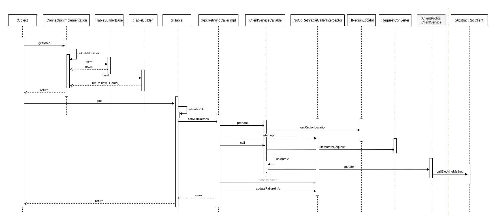

Put涉及到的模块说明
HBase采用LSM树架构，天生适用于写多读少的应用场景。在真实生产线环境中，也正是因为HBase集群出色的写入能力，才能支持当下很多数据激增的业务。需要说明的是，HBase服务端并没有提供update、delete接口，HBase中对数据的更新、删除操作在服务器端也认为是写入操作，不同的是，更新操作会写入一个最新版本数据，删除操作会写入一条标记为deleted的KV数据。所以HBase中更新、删除操作的流程与写入流程完全一致。当然，HBase数据写入的整个流程随着版本的迭代在不断优化，但总体流程变化不大。
写入流程的三个阶段
从整体架构的视角来看，写入流程可以概括为三个阶段。
- 客户端处理阶段：客户端将用户的写入请求进行预处理，并根据集群元数据定位写入数据所在的RegionServer，将请求发送给对应的RegionServer。
- Region写入阶段：RegionServer接收到写入请求之后将数据解析出来，首先写入WAL，再写入对应Region列簇的MemStore。
- MemStore Flush阶段：当Region中MemStore容量超过一定阈值，系统会异步执行flush操作，将内存中的数据写入文件，形成HFile。
用户写入请求在完成Region MemStore的写入之后就会返回成功。MemStoreFlush是一个异步执行的过程。
put操作的RPC消息结构
put操作的流程介绍
HBase Client的流程
HBase客户端处理写入请求的核心流程基本上可以概括为三步。
- 用户提交put请求后，HBase客户端会将写入的数据添加到本地缓冲区中，符合一定条件就会通过AsyncProcess异步批量提交。HBase默认设置autoflush=true，表示put请求直接会提交给服务器进行处理；用户可以设置autoflush=false，这样，put请求会首先放到本地缓冲区，等到本地缓冲区大小超过一定阈值（默认为2M，可以通过配置文件配置）之后才会提交。很显然，后者使用批量提交请求，可以极大地提升写入吞吐量，但是因为没有保护机制，如果客户端崩溃，会导致部分已经提交的数据丢失。
- 在提交之前，HBase会在元数据表hbase:meta中根据rowkey找到它们归属的RegionServer，这个定位的过程是通过HConnection的locateRegion方法(下图中的getRegionLocation方法最终调用到的方法)完成的。如果是批量请求，还会把这些rowkey按照HRegionLocation分组，不同分组的请求意味着发送到不同的RegionServer，因此每个分组对应一次RPC请求。
- HBase会为每个HRegionLocation构造一个远程RPC请求MultiServerCallable，并通过rpcCallerFactory. newCaller()执行调用。将请求经过Protobuf序列化后发送给对应的RegionServer。

备注

图中的 meta cache 基于 CopyOnWriteArrayMap 实现。
- 客户端根据写入的表以及rowkey在元数据缓存中查找，如果能够查找出该rowkey所在的RegionServer以及Region，就可以直接发送写入请求（携带Region信息）到目标RegionServer。
- 如果客户端缓存中没有查到对应的rowkey信息，需要首先到ZooKeeper上/hbase/meta-region-server节点查找HBase元数据表所在的RegionServer。向hbase:meta所在的RegionServer发送查询请求，在元数据表中查找rowkey所在的RegionServer以及Region信息。客户端接收到返回结果之后会将结果缓存到本地，以备下次使用。
- 客户端根据rowkey相关元数据信息将写入请求发送给目标RegionServer，RegionServer接收到请求之后会解析出具体的Region信息，查到对应的Region对象，并将数据写入目标Region的MemStore中。
HBase Master的流程
HBase RegionServer的流程
数据写入Region的流程可以抽象为两步：追加写入HLog，随机写入MemStore

HLog追加写入
HLog保证成功写入MemStore中的数据不会因为进程异常退出或者机器宕机而丢失，但实际上并不完全如此，HBase定义了多个HLog持久化等级，使得用户在数据高可靠和写入性能之间进行权衡。
HLog持久化等级
HBase可以通过设置HLog的持久化等级决定是否开启HLog机制以及HLog的落盘方式。HLog的持久化等级分为如下五个等级。
| 等级 | 说明 |
|---|---|
| SKIP_WAL | 只写缓存，不写HLog日志。因为只写内存，因此这种方式可以极大地提升写入性能，但是数据有丢失的风险。在实际应用过程中并不建议设置此等级，除非确认不要求数据的可靠性。 |
| SYNC_WAL | 同步将数据写入日志文件中，需要注意的是，数据只是被写入文件系统中，并没有真正落盘。HDFS Flush策略详见HADOOP-6313。 |
| FSYNC_WAL | 同步将数据写入日志文件并强制落盘。这是最严格的日志写入等级，可以保证数据不会丢失，但是性能相对比较差。 |
| USER_DEFAULT | 如果用户没有指定持久化等级，默认HBase使用SYNC_WAL等级持久化数据。 |
用户可以通过客户端设置HLog持久化等级，代码如下：
|
|
HLog写入模型
在HBase的演进过程中，HLog的写入模型几经改进，写入吞吐量得到极大提升。之前的版本中，HLog写入都需要经过三个阶段：首先将数据写入本地缓存，然后将本地缓存写入文件系统，最后执行sync操作同步到磁盘。
很显然，三个阶段是可以流水线工作的，基于这样的设想，写入模型自然就想到“生产者-消费者”队列实现。然而之前版本中，生产者之间、消费者之间以及生产者与消费者之间的线程同步都是由HBase系统实现，使用了大量的锁，在写入并发量非常大的情况下会频繁出现恶性抢占锁的问题，写入性能较差。
当前版本中，HBase使用LMAX Disruptor框架实现了无锁有界队列操作。基于Disruptor的HLog写入模型如图所示。
图中最左侧部分是Region处理HLog写入的两个前后操作：append和sync。当调用append后，WALEdit和HLogKey会被封装成FSWALEntry类，进而再封装成RingBufferTruck类放入Disruptor无锁有界队列中。当调用sync后，会生成一个SyncFuture，再封装成RingBufferTruck类放入同一个队列中，然后工作线程会被阻塞，等待notify()来唤醒。
图最右侧部分是消费者线程，在Disruptor框架中有且仅有一个消费者线程工作。这个框架会从Disruptor队列中依次取出RingBufferTruck对象，然后根据如下选项来操作：
- 如果RingBufferTruck对象中封装的是FSWALEntry，就会执行文件append操作，将记录追加写入HDFS文件中。需要注意的是，此时数据有可能并没有实际落盘，而只是写入到文件缓存。
- 如果RingBufferTruck对象是SyncFuture，会调用线程池的线程异步地批量刷盘，刷盘成功之后唤醒工作线程完成HLog的sync操作。
Region写入阶段

服务器端RegionServer接收到客户端的写入请求后，首先会反序列化为put对象，然后执行各种检查操作，比如检查Region是否是只读、MemStore大小是否超过blockingMemstoreSize等。检查完成之后，执行一系列核心操作

- Acquire locks ：HBase中使用行锁保证对同一行数据的更新都是互斥操作，用以保证更新的原子性，要么更新成功，要么更新失败。
- Update LATEST_TIMESTAMP timestamps ：更新所有待写入（更新）KeyValue的时间戳为当前系统时间。
- Build WAL edit ：HBase使用WAL机制保证数据可靠性，即首先写日志再写缓存，即使发生宕机，也可以通过恢复HLog还原出原始数据。该步骤就是在内存中构建WALEdit对象，为了保证Region级别事务的写入原子性，一次写入操作中所有KeyValue会构建成一条WALEdit记录。
- Append WALEdit To WAL ：将步骤3中构造在内存中的WALEdit记录顺序写入HLog中，此时不需要执行sync操作。当前版本的HBase使用了disruptor实现了高效的生产者消费者队列，来实现WAL的追加写入操作。
- Write back to MemStore：写入WAL之后再将数据写入MemStore。
- Release row locks：释放行锁。
- Sync wal ：HLog真正sync到HDFS，在释放行锁之后执行sync操作是为了尽量减少持锁时间，提升写性能。如果sync失败，执行回滚操作将MemStore中已经写入的数据移除。
- 结束写事务：此时该线程的更新操作才会对其他读请求可见，更新才实际生效。
MemStore Flush阶段
触发条件
见HBase Cache 介绍，这里不再重复说明。
执行流程
为了减少flush过程对读写的影响，HBase采用了类似于两阶段提交的方式，将整个flush过程分为三个阶段。
| 阶段 | 说明 |
|---|---|
| prepare | 遍历当前Region中的所有MemStore，将MemStore中当前数据集CellSkipListSet（内部实现采用ConcurrentSkipListMap）做一个快照snapshot，然后再新建一个CellSkipListSet接收新的数据写入。prepare阶段需要添加updateLock对写请求阻塞，结束之后会释放该锁。因为此阶段没有任何费时操作，因此持锁时间很短。 |
| flush | 遍历所有MemStore，将prepare阶段生成的snapshot持久化为临时文件，临时文件会统一放到目录.tmp下。这个过程因为涉及磁盘IO操作，因此相对比较耗时。 |
| commit | 遍历所有的MemStore，将flush阶段生成的临时文件移到指定的ColumnFamily目录下，针对HFile生成对应的storefile和Reader，把storefile添加到Store的storef iles列表中，最后再清空prepare阶段生成的snapshot。 |
生成HFile
HFile的数据结构见HBase HFile 介绍，这里不再重复说明。
MemStore中KV在flush成HFile时首先构建Scanned Block部分，即KV写进来之后先构建Data Block并依次写入文件，在形成Data Block的过程中也会依次构建形成Leaf index Block、Bloom Block并依次写入文件。一旦MemStore中所有KV都写入完成，Scanned Block部分就构建完成。 Non-scanned Block、Load-on-open以及Trailer这三部分是在所有KV数据完成写入后再追加写入的。
Scanned Block 构建

- MemStore执行flush，首先新建一个Scanner，这个Scanner从存储KV数据的CellSkipListSet中依次从小到大读出每个cell（KeyValue）。这里必须注意读取的顺序性，读取的顺序性保证了HFile文件中数据存储的顺序性，同时读取的顺序性是保证HFile索引构建以及布隆过滤器Meta Block构建的前提。
- appendGeneralBloomFilter ：在内存中使用布隆过滤器算法构建BloomBlock，下文也称为Bloom Chunk。
- appendDeleteFamilyBloomFilter ：针对标记为"DeleteFamily"或者"DeleteFamilyVersion"的cell，在内存中使用布隆过滤器算法构建BloomBlock，基本流程和appendGeneralBloomFilter相同。
- (HFile.Writer)writer.append ：将cell写入Data Block中，这是HFile文件构建的核心。
####### Bloom Block 构建
图为Bloom Block构建示意图，实际实现中使用chunk表示Block概念，两者等价。
布隆过滤器内存中维护了多个称为chunk的数据结构，一个chunk主要由两个元素组成：
一块连续的内存区域，主要存储一个特定长度的数组。默认数组中所有位都为0，对于row类型的布隆过滤器，cell进来之后会对其rowkey执行hash映射，将其映射到位数组的某一位，该位的值修改为1。 firstkey，第一个写入该chunk的cell的rowkey，用来构建Bloom IndexBlock。 cell写进来之后，首先判断当前chunk是否已经写满，写满的标准是这个chunk容纳的cell个数是否超过阈值。如果超过阈值，就会重新申请一个新的chunk，并将当前chunk放入ready chunks集合中。如果没有写满，则根据布隆过滤器算法使用多个hash函数分别对cell的rowkey进行映射，并将相应的位数组位置为1。
####### Data Block构建
一个cell在内存中生成对应的布隆过滤器信息之后就会写入Data Block，写入过程分为两步。
- Encoding KeyValue ：使用特定的编码对cell进行编码处理，HBase中主要的编码器有DiffKeyDeltaEncoder、FastDiffDeltaEncoder以及PrefixKeyDeltaEncoder等。编码的基本思路是，根据上一个KeyValue和当前KeyValue比较之后取delta，展开讲就是rowkey、column family以及column分别进行比较然后取delta。假如前后两个KeyValue的rowkey相同，当前rowkey就可以使用特定的一个f lag标记，不需要再完整地存储整个rowkey。这样，在某些场景下可以极大地减少存储空间。
- 将编码后的KeyValue写入DataOutputStream。
随着cell的不断写入，当前Data Block会因为大小超过阈值（默认64KB）而写满。写满后Data Block会将DataOutputStream的数据f lush到文件，该Data Block此时完成落盘。
####### Leaf Index Block构建
Data Block完成落盘之后会立刻在内存中构建一个Leaf Index Entry对象，并将该对象加入到当前Leaf Index Block。Leaf Index Entry对象有三个重要的字段。
- firstKey：落盘Data Block的第一个key。用来作为索引节点的实际内容，在索引树执行索引查找的时候使用。
- blockOffset：落盘Data Block在HFile文件中的偏移量。用于索引目标确定后快速定位目标Data Block。
- blockDataSize：落盘Data Block的大小。用于定位到Data Block之后的数据加载。
Leaf Index Block会随着Leaf Index Entry的不断写入慢慢变大，一旦大小超过阈值（默认64KB），就需要f lush到文件执行落盘。需要注意的是，LeafIndex Block落盘是追加写入文件的，所以就会形成HFile中Data Block、LeafIndex Block交叉出现的情况。
和Data Block落盘流程一样，Leaf Index Block落盘之后还需要再往上构建RootIndex Entry并写入Root Index Block，形成索引树的根节点。但是根节点并没有追加写入"Scanned block"部分，而是在最后写入"Load-on-open"部分。
可以看出，HFile文件中索引树的构建是由低向上发展的，先生成Data Block，再生成Leaf Index Block，最后生成Root Index Block。而检索rowkey时刚好相反，先在Root Index Block中查询定位到某个Leaf Index Block，再在Leaf IndexBlock中二分查找定位到某个Data Block，最后将Data Block加载到内存进行遍历查找。
####### Bloom Block Index构建
完成Data Block落盘还有一件非常重要的事情：检查是否有已经写满的BloomBlock。如果有，将该Bloom Block追加写入文件，在内存中构建一个BloomIndex Entry并写入Bloom Index Block。
整个流程与Data Block落盘后构建Leaf Index Entry并写入Leaf Index Block的流程完全一样。在此不再赘述。
流程总结
flush阶段生成HFile和Compaction阶段生成HFile的流程完全相同，不同的是，flush读取的是MemStore中的KeyValue写成HFile，而Compaction读取的是多个HFile中的KeyValue写成一个大的HFile，KeyValue来源不同。KeyValue数据生成HFile，首先会构建Bloom Block以及Data Block，一旦写满一个Data Block就会将其落盘同时构造一个Leaf Index Entry，写入LeafIndex Block，直至Leaf Index Block写满落盘。实际上，每写入一个KeyValue就会动态地去构建"Scanned Block"部分，等所有的KeyValue都写入完成之后再静态地构建"Non-scanned Block"部分、“Load on open"部分以及"Trailer"部分。